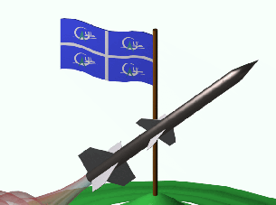
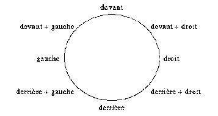

Apollon: Frère jumeau d'Artémis, sa tâche est de conduire le soleil dans le ciel
à l'aide d'un chariot tiré par quatre chevaux.
Résultats du lancement
La fusée Apollon est la suite immédiate à Artémis. Par contre, elle comporte plusieurs innovations telles que l'ajout d'un étage et l'amélioration de l'électronique. De plus, elle a effectué un vol de plus haute altitude que ses prédécesseurs. Elle a plusieurs tâches: libérer son deuxième étage après la combustion complète du propulseur, déployer par elle-même son parachute lorsqu'elle sera rendue à son point de culmination, cueillir des données physiques au cours de son envolée, les emmagasiner en mémoire, les transmettre au sol par voie hertzienne afin de les visualiser en temps réel et les retransmettre directement à un ordinateur personnel lors de la récupération de la fusée. Sur la figure 1, nous illustrons les différentes phases de la fusée lors de son vol.

Figure 1: Les différentes phases d'Apollon
2.1 La structure mécanique
La structure mécanique de la fusée expérimentale est divisée en deux étages, chacune à son tour divisée en niveaux ayant un rôle spécifique à jouer. Tous les niveaux sont divisés par un joint inter-niveau qui leur sont propre. Le premier étage est composé de deux niveaux: le moteur principal et le système de récupération. Le premier moteur ne sert que pendant la première partie du décollage. Il est ensuite largué lors de la première séparation et le parachute contenu dans le niveau de récupération se déploie. C'est dans le deuxième étage que se situe la majorité des éléments nécessaires au fonctionnement d'Apollon. On y retrouve le deuxième moteur, son niveau récupération, le niveau électronique et le niveau télémesure. La structure interne, que l'on appelle aussi la porteuse, est composée de deux poutres centrales reliant les joints inter-niveaux entre eux. Ces pièces sont faites en aluminium. Toute cette structure interne est enveloppée par un fuselage composé soit d'aluminium, ou de fibre de carbone. Pour faciliter l'accès à l'instrumentation interne de la fusée, le fuselage est divisé en demi-cylindres pouvant être retirés lorsque nécessaire.
2.1.1 Niveaux moteurs
Ces deux niveaux ont une configuration bien particulière. En effet, ce niveau, composé du moteur et du carburant, a un diamètre inférieur au reste de la fusée. Cette partie, que l'on appelle niveau moteur, est insérée dans le joint inter-niveau ou le "joint moteur". Pour conserver le profil aérodynamique de la fusée, le moteur est recouvert d'un cylindre qui est le prolongement du fuselage des niveaux supérieurs. C'est à ce niveau que seront fixés les ailerons servant à stabiliser la fusée au cours du vol. Le propulseur utilisé est le CRV-7, dont les caractéristiques sont illustrés au tableau 1.
| Masse : | 6,4 kg |
| Masse moteur + fusée : | 20 kg |
| Temps de combustion : | 2,2 sec |
| Poussée maximale : | 7100 N |
| Impulsion totale | 10315 N·s |
Tableau 1: Caractéristiques du propulseur CRV-7
Le deuxième niveau moteur contient, pour cette année, une caméra pour la prise d'images durant le vol.
2.1.2 Niveau récupération
La fonction principale de ce troisième niveau est la récupération de la fusée. C'est dans cette section qu'est situé le parachute de récupération. L'éjection du parachute se fait par une porte latérale. Le système d'éjection est assez simple: lorsque la fusée est au sommet de sa courbe, l'ordinateur de vol envoie un signal à une goupille pyrotechnique qui commande l'ouverture de la porte latérale. À cet instant, le parachute est déployé.
2.1.3 Niveau électronique
C'est à ce niveau que l'on trouve les principales composantes électroniques. Les cartes électroniques sont empilées une par dessus les autres à la verticale, économisant beaucoup d'espace ainsi. De plus, des instruments nécessaires aux expériences faites en cours de vol (voir section 2.3) sont installés dans ce niveau. On y retrouve l'ordinateur de vol, les séquenceurs, la carte des capteurs et le panneau de contrôle de l'instrumentation électronique. Ce dernier est placé sur l'une des deux faces de l'électronique. Une porte située sur la paroi extérieure de la fusée permet d'y avoir accès facilement. Pour permettre la communication entre les niveaux, des orifices sont créés dans les joints inter-niveaux afin de pouvoir passer les câbles.
2.1.4 Niveau télémesure
Étant le sommet de la fusée, le cinquième niveau a une forme géométrique particulière. À ce niveau, il n'y a pas de structure centrale et le fuselage est en forme de pointe. Puisqu'il est prévisible que la fusée dépasse le mur du son, la pointe de la fusée nécessite une configuration spéciale. Cette pointe doitt être de forme ogivale. Pour des raisons de télémétrie, le fuselage du cinquième niveau n'est pas métallique. C'est pour cette raison que le sommet est fait de fibre de verre. Ainsi, on y installe les instruments de télémesure, dont l'émetteur et l'antenne. Quelques données techniques sur la fusée sont présentées dans le tableau 2.
| Masse (propulseur inclus) : | 22 kg |
| Longueur : | 3,80 m |
| Diamètre : | 12,7 cm |
| Durée de combustion : | 3 sec. |
| Poussée maximale | 2800 N |
| Altitude maximale | > 2200 m |
| Temps pour altitude maximale : | ~20 sec |
| Impulsion totale : | 6700 N·s |
2.2 L'électronique
Maintenant que la visualisation de chaque niveau de la fusée est faite, nous pouvons attaquer la partie de l'électronique d'Apollon. L'électronique est présente à plusieurs niveaux. Ses principaux modules sont: l'ordinateur de vol, l'émetteur, la carte des capteurs, le séquenceur, le panneau de contrôle et le numériseur d'images. Le bloc diagramme de l'électronique est présenté à la figure 2. Il permet de visualiser tous les liens existant entre les différents modules.

Figure 2: Bloc diagramme de l'ordinateur de vol
2.2.1 L'ordinateur de vol
L'ordinateur de vol est le module électronique qui gère et dirige les opérations tout au long de son périple, dans les airs comme au sol. Il a la responsabilité de prendre les acquisitions des différents capteurs, de les emmagasiner dans une mémoire et de les relayer à l'émetteur. Aussi, l'ordinateur de vol prend en note, à chaque acquisition, la phase de vol de la fusée et son état, à partir de petits détecteurs d'états. Ceci est fait afin qu'on puisse interpréter les changements brusques des données. L'ordinateur de vol est muni du micro-contrôleur (MC68HC11), lequel est programmé pour prendre une acquisition des différents capteurs (et des détecteurs) à tous les 10 ms. Il se sert de ses convertisseurs A/N intégrés afin de convertir le signal analogique, fourni par le capteur, en une donnée numérisée sur 8 bits. Ensuite, le MC68HC11 se charge de la transférer à l'émetteur par le biais du port série et à la mémoire externe, en vue de la récupérer à la fin de l'expérience. Aussi, l'ordinateur de vol commande la prise d'image sur le numériseur et doit assurer l'ouverture du parachute au bon moment, décision prise au moyen d'un algorithme basé sur la logique floue. Il utilise les données fournies par les capteurs (vitesse et altitude) et le temps pour ensuite les traiter et les analyser. Au sol, avant et après le vol, il sert d'interface entre la mémoire de bord et l'ordinateur personnel. Il utilise son port série asynchrone pour communiquer avec celui du PC. Il s'en sert avant l'expérience afin de programmer les paramètres adéquats pour l'équation de logique floue (utilisés pour ouvrir le parachute). Lors du vol, l'ordinateur de vol se sert aussi de son port série afin de relayer les données à l'émetteur. À la fin de l'expérience, la communication est de nouveau rétablie afin de récupérer les données emmagasinées dans la mémoire et celle du numériseur d'images.
2.2.2 Séquenceur
Le séquenceur est un petit dispositif dans la fusée qui sert de minuterie de secours pour l'ouverture du parachute. C'est lui qui détecte le décollage de la fusée et qui commande l'ampli de puissance qui fait sauter l'inflammateur, nécessaire à l'éjection de la porte retenant le parachute. Il est important que le séquenceur possède une alimentation indépendante en plus d'être isolé électriquement de tous les autres modules s'y rapportant. Une de ses fonctions très importantes est le déclenchement externe (ordinateur de vol) du mécanisme. Ce dernier doit être géré par une fenêtre temporelle comme celle illustrée à la figure 3. Le temps zéro correspond au temps du décollage. Avant le temps T1, le séquenceur interdit tout signal externe de faire ouvrir le parachute. Entre T1 et T2, celui-ci donne l'autorisation, et à T2, il force la commande.

Figure 3: Diagramme de la fenêtre temporelle du séquenceur
2.2.3 Panneau de contrôle
Le panneau de contrôle est le module qui permet à l'utilisateur de commander et d'initialiser les autres modules en plus de recevoir d'une façon visuelle des informations de ceux-ci. De plus, il sert aussi de carte-mère en inter-reliant les signaux de tous les modules. Enfin, sa dernière fonction est de distribuer les différentes alimentations.
2.2.4 Système d'acquisition d'images
Le système d'acquisition d'images est constitué essentiellement d'une caméra et d'un numériseur d'images. Il sera situé dans le premier étage d'Apollon, à la place du second moteur pour cette année. Les images pourront être acquises une fois le premier étage largué. La caméra vidéo est reliée à un numériseur d'images noir et blanc. Les images de dimension 256 x 256 sont numérisées sur 8 bits. Ce numériseur possédera sa propre mémoire de 1 Mo, ce qui permettra l'acquisition de 16 images durant le vol. Il est commandé par l'ordinateur de vol et interfacé avec le port parallèle de ce dernier.
2.2.5 Télémesure
A) L'émetteur
L'émetteur est la partie électronique permettant de transmettre, par voie hertzienne, les données recueillies au récepteur se trouvant au sol. Ainsi, si par malchance un problème électrique survenait au niveau de la mémoire, aucune donnée ne serait perdue. L'émetteur reçoit son signal du micro-contrôleur, le module en fréquence, et l'envoie dans l'air au moyen de l'antenne. Le signal à l'entrée de l'émetteur est un signal série, c'est à dire une série de 1 et de 0. Utilisant la modulation FSK, il n'a qu'à convertir les zéros en une fréquence f1, et les uns, en une autre fréquence f2. La plage de fréquence allouée est située aux alentours de 136,5 MHz et la puissance minimale requise sera de 0,3 watt. Au sol, le récepteur capte le signal modulé et le retransforme en un signal série. La sortie sera branchée au port série de l'ordinateur personnel. Ainsi, le groupe émetteur-air-récepteur ne simule en fait qu'un câble série. Les données seront recueillies et affichées en temps réel (avec un délai de transmission) sur le moniteur de l'ordinateur.
B) Système de localisation
Un récepteur mobile s'occupera de localisation l'emplacement de la fusée après son atterrissage. Il sera principalement constitué d'un circuit relié à quatre antennes. Le circuit compare le déphasage des signaux reçus de chacune des antennes et donne la direction de la fusée avec les possibilités illustrées sur la figure 4.

Figure 4: Directions de localisation de la fusée 2.3
Les expériences
Nous ne pouvons pas parler d'une fusée expérimentale sans mentionner ses expériences à bord. Pour Apollon, elles sont essentiellement la séparation du premier étage, la prise d'images par caméra vidéo, la double mesure de l'altitude (mesure de l'influence de l'accélération sur les capteurs) et la mesure de la déformation de la paroi. Les mesures d'altitude sont effectuées à l'aide de capteurs de pression de type tube de pitot. La déformation de la paroi est connue à l'aide de jauges de déformation. Dans chaque cas, le signal fournit par les différents capteurs devra passer par un ampli différentiel, puis être filtré, pour ensuite être acheminé sous forme d'un signal analogique vers le micro-contrôleur. Celui-ci se charge de numériser et de mémoriser les résultats afin de pouvoir les interpréter plus tard. Enfin, plusieurs détecteurs d'états sont placés à l'intérieur de la fusée afin d'indiquer l'état de la fusée. Il y a un capteur pour la détection du décollage, un pour la détection de l'ouverture de la porte du parachute, un pour le déploiement de celui-ci et enfin un autre pour la séparation de la case moteur.
2.4 Logiciels
Nous travaillons sur la conception d'un simulateur de données afin de tester l'algorithme de décision pour l'ouverture de la porte de la case parachute. Les données générées sont acheminées par le biais d'un port série vers la fusée. Ces données, qui simulent ceux des capteurs en cours de vol, sont utilisées par l'algorithme et ce dernier retransmet le résultat au PC. Il est ainsi plus facile d'ajuster les paramètres de l'algorithme.
3. Résulat du lancement
Le lancement a eu lieu à la base militaire de Valcartier vers 15h00 samedi le 13 septembre 1997. Les expériences emportées par Apollon comprenaient un capteur de pression statique, des jauges de déformation devant mesurer les déformations de la paroi de la fusée à sa base, une séparation à mi-longueur de la fusée ainsi que la prise de photographies numériques par une caméra placée dans la fusée et libéree par la séparation. Les jauges de déformation n'ont pas été branchées compte tenu de problèmes techniques quelques heures avant le lancement. La mise à feu d'Apollon a été effectuée avec succès. La télémétrie a fonctionné jusqu'au moment de la séparation, fournissant des données sur l'altitude et la vitesse de la fusée. L'altitude à la séparation s'est effectuée sans problème avec la mise à feu de deux boulons explosifs. Toute transmission de télémétrie a été perdue à partir de la séparation. L'étage supérieur de la fusée a continué une trajectoire ballistique élevée compte tenu de l'abandon de l'étage inférieur, qui a retombé rapidement compte tenu de sa forme non aérodynamique. Le parachute de l'étage inférieur a été éjecté mais ne s'est pas déployé correctement, causant une torche. L'étage inférieur a été retrouvé à environ 100 m du point de lancement. L'étage supérieur semble avoir été endommagé, le parachute ne s'étant pas déployé. L'étage a été perdu de vue et jamais retrouvé.